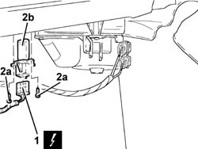

5020A44 heater fan motor resistor - r+r
- Path
- Procedures > 50 AUXILIARY UNITS > 5020 HEATER > 5020A box and components > 5020A44 heater fan motor resistor - r+r
- Kind
- repair procedure (removal / refitting; the operation number is the code)
- Applies to
- all engines; all production periods
- Interactive page
- https://sloeber94.github.io/elrnDB-fDbl/en/#/2584806
Applies to: all engines; all production periods
 Removing
Removing
 Refitting
RefittingDisconnect the battery negative terminal.
1. Working under the dashboard on the passenger side, disconnect the electrical connection from the fan motor electronic variable drive.
Name | Connector | |
|---|---|---|
1 | Passenger compartment air fan adjustment resistor | See O30 PASSENGER COMPARTMENT AIR FAN ADJUSTMENT RESISTOR ( HEATER ) |
2. Undo the bolts (2a) and remove the fan motor electronic variable drive (2b).

Applies to: all engines; all production periods
Refitting
RemovingPlace the fan motor electronic variable drive back in its housing and bolt to the upper beam.
Connect the electrical connection to the fan motor electronic variable drive.
 | Name | Connector |
|---|---|---|
- | Passenger compartment air fan adjustment resistor | See O30 PASSENGER COMPARTMENT AIR FAN ADJUSTMENT RESISTOR ( HEATER ) |
Connect the battery negative terminal.